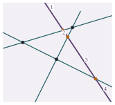

STEP II 1990, Question 4
Read the question before you go on. It is in the STEP Support Programme’s question database: step.maths.org/questions/90-s2-q4
The hook
How many pieces can you cut a pizza into with \(n\) straight cuts, if the pieces need not be the same size? One cut gives \(2\), two cuts give \(4\), three cuts give \(7\) (not \(8\): try it), four give \(11\). The sequence \(1, 2, 4, 7, 11, 16, \ldots\) is known as the lazy caterer’s sequence, and this question asks for its formula.
The question is a first lesson in a technique that runs through all of combinatorics: do not try to count everything at once. Instead, ask what changes when you add one more object. And the answer turns out to be a special case of Euler’s formula \(V - E + F = 2\), which you met with the Platonic solids in Section 7.9.
Before you start
Draw the cases \(n = 1, 2, 3, 4\) carefully, keeping the lines in general position (no two parallel, no three through a point). Count the segments and the regions in each case. Can you guess the patterns?
You should find:
| \(n\) | \(0\) | \(1\) | \(2\) | \(3\) | \(4\) |
|---|---|---|---|---|---|
| segments | \(0\) | \(1\) | \(4\) | \(9\) | \(16\) |
| regions | \(1\) | \(2\) | \(4\) | \(7\) | \(11\) |
The segments look like \(n^2\). The regions go up by \(1, 2, 3, 4\): the differences are the natural numbers.
Working it through
Stage 1 Counting segments
Concentrate on one line. How many of the other lines cross it, and into how many pieces do they cut it?
Each line is crossed by each of the other \(n - 1\) lines (none is parallel to it), and at \(n - 1\) different points (no three lines meet at a point). Those \(n - 1\) points cut the line into \(n\) segments: two infinite ones at the ends, and \(n - 2\) finite ones between. With \(n\) lines, there are \[n \times n = n^2 \text{ segments}. \qed\] This is a direct count, with no induction needed: we counted segments line by line.
Stage 2 What happens when we add a line?
Suppose \(n - 1\) lines are drawn, and you add the \(n\)th. It is cut into \(n\) segments by the others. What does each segment do to the region it passes through?
As the new line is drawn, each of its \(n\) segments runs through one of the existing regions and splits it into two (Figure 9.1.1). Different segments lie in different regions, because to pass from one region to another the line must cross an existing line. So adding the \(n\)th line increases the number of regions by exactly \(n\): \[R(n) = R(n - 1) + n.\]
Stage 3 Solving the recurrence
Starting from \(R(0) = 1\) (no lines, one region), \[R(n) = 1 + (1 + 2 + \cdots + n) = 1 + \frac{n(n + 1)}{2} = \frac{n^2 + n + 2}{2}.\] To present this as an induction: the formula holds for \(n = 1\), since \(\frac12(1 + 1 + 2) = 2\); and if \(R(n - 1) = \frac12\bigl((n - 1)^2 + (n - 1) + 2\bigr) = \frac12(n^2 - n + 2)\), then \(R(n) = \frac12(n^2 - n + 2) + n = \frac12(n^2 + n + 2)\).■

Looking back
Count one piece at a time. Segments were counted line by line; regions were counted by what one new line adds.
Turn a geometric step into a recurrence. The observation “each new segment splits one region” became \(R(n) = R(n - 1) + n\).
General position matters. Parallel lines, or three lines through a point, would give fewer regions. Find where each assumption was used.
What’s really going on
Euler’s formula in disguise
Here is a second proof, which explains the answer rather than just deriving it. Think of the arrangement of lines as a map: the crossing points are vertices, the segments are edges and the regions are faces. There are \(V = \binom{n}{2}\) vertices (one for each pair of lines) and \(E = n^2\) edges. The infinite segments have only one end, so add a single extra vertex “at infinity” where they all meet; now the picture is a map drawn on a sphere (imagine the plane wrapped round a ball, with infinity at the top). Euler’s formula \(V - E + F = 2\) from Section 7.9 gives \[\Bigl(\binom{n}{2} + 1\Bigr) - n^2 + F = 2, \qquad\text{so}\qquad F = n^2 - \frac{n(n - 1)}{2} + 1 = \frac{n^2 + n + 2}{2}.\] The same number, from a completely different direction. The regions also split neatly into types: \(2n\) of them are unbounded (one between each pair of neighbouring infinite rays), and the remaining \(\frac12(n^2 + n + 2) - 2n = \binom{n - 1}{2}\) are bounded.
Binomial coefficients and higher dimensions
The formula can be written as \[R(n) = \binom{n}{0} + \binom{n}{1} + \binom{n}{2},\] and this is not a coincidence. Turn the picture so that no line is horizontal. A region that is bounded below has a lowest point, which must be a crossing, and each crossing is the lowest point of exactly one region (the one directly above it): that gives \(\binom{n}{2}\) regions, one for each pair of lines. Every other region stretches down for ever, and so meets a horizontal line drawn far below all the crossings; the \(n\) lines cut that horizontal line into \(n + 1\) intervals, one in each such region. In total, \(\binom{n}{2} + n + 1\). In three dimensions, \(n\) planes in general position cut space into \[\binom{n}{0} + \binom{n}{1} + \binom{n}{2} + \binom{n}{3} = \frac{n^3 + 5n + 6}{6}\] pieces (the cake numbers \(1, 2, 4, 8, 15, 26, \ldots\)), and the pattern continues in every dimension. The proof is the same induction: a new plane is cut by the others into regions arranged like lines in a plane, and each of those regions splits a piece of space in two.
The formula for regions cut by lines and planes was found by Jakob Steiner in 1826. Today it is the starting point of the theory of hyperplane arrangements, which counts the regions formed by arbitrary collections of lines, planes and their higher-dimensional analogues, including non-general ones. A remarkable 1975 theorem of Thomas Zaslavsky counts the regions of any arrangement using a polynomial that encodes which hyperplanes meet. The same ideas appear in machine learning: a neural network built from “ReLU” units cuts its input space into regions by hyperplanes, and the number of regions measures how complicated a function it can represent.
The thinking skill
To count a configuration of \(n\) objects, compare it with the configuration of \(n - 1\). The change is often much easier to count than the whole.
This is induction used as a tool for discovery, not just for proof. It is one of the most common moves in combinatorics, and it turns a geometric question into a recurrence relation that can be solved.
Try this next
Circles. Show that \(n\) circles, each pair meeting in two points and no three through a point, divide the plane into \(n^2 - n + 2\) regions.
Parallel lines. If the \(n\) lines include \(k\) that are all parallel to each other (and otherwise general position), how many regions are there?
Cake numbers. Prove by induction that \(n\) planes in general position divide space into \(\frac16(n^3 + 5n + 6)\) regions.
A pattern that breaks. Put \(n\) points on a circle and join every pair with a chord, with no three chords through one point inside the circle. For \(n = 1, 2, 3, 4, 5\) you get \(1, 2, 4, 8, 16\) regions. Count the regions for \(n = 6\). (Hint: use Euler’s formula; each set of four points gives one crossing.) Show that the number is \(1 + \binom{n}{2} + \binom{n}{4}\).
Further reading
Ronald Graham, Donald Knuth & Oren Patashnik, Concrete Mathematics (Addison-Wesley), Chapter 1. Starts with exactly this problem, and the “pizza” and “zig” variants.
Miklós Bóna, A Walk Through Combinatorics (World Scientific). A friendly first course, with chapters on induction, graphs and Euler’s formula.
Richard Guy, “The strong law of small numbers”, American Mathematical Monthly 95 (1988). Many patterns that look obvious and turn out to be false, including the circle problem in the exercises.